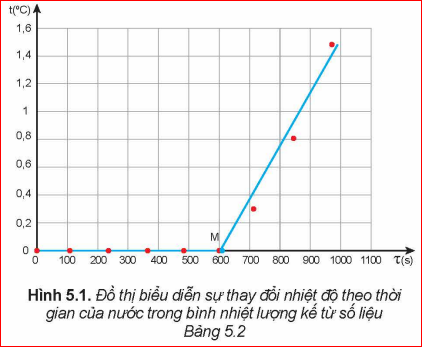

"Khi vật bắt đầu nóng chảy phải tiếp tục cung cấp nhiệt lượng cho vật để vật nóng chảy hoàn toàn. Nhiệt lượng này phụ thuộc vào những đại lượng nào?"
I. KHÁI NIỆM NHIỆT NÓNG CHẢY RIÊNG
1. Hệ thức tính nhiệt lượng trong quá trình truyền nhiệt để làm vật nóng chảy hoàn toàn
Nhiệt lượng cần truyền cho vật khi vật bắt đầu nóng chảy tới khi vật nóng chảy hoàn toàn phụ thuộc vào khối lượng của vật và tính chất của chất làm vật.
Trong đó:
\( Q \): Nhiệt lượng cần truyền cho vật (J)
\( m \): Khối lượng của vật (kg)
\( \lambda \): Nhiệt nóng chảy riêng của chất làm vật (J/kg)
Bảng 5.1 dưới đây cung cấp giá trị nhiệt nóng chảy riêng của một số chất phổ biến:
| Chất | Nhiệt độ nóng chảy (°C) | Nhiệt nóng chảy riêng (J/kg) |
|---|---|---|
| Nước đá | 0 | \( 3,34 \cdot 10^5 \) |
| Sắt | 1535 | \( 2,77 \cdot 10^5 \) |
| Đồng | 1084 | \( 1,80 \cdot 10^5 \) |
| Chì | 327 | \( 0,25 \cdot 10^5 \) |
2. Định nghĩa nhiệt nóng chảy riêng
Nhiệt nóng chảy riêng của một chất là nhiệt lượng cần để làm cho một kilôgam chất đó nóng chảy hoàn toàn ở nhiệt độ nóng chảy.
Ý nghĩa: Giúp xác định năng lượng cần cung cấp cho lò nung, thời gian nung và lựa chọn vật liệu chế tạo hợp kim, tách kim loại nguyên chất ra khỏi quặng...
Câu hỏi 1: Tại sao khi chế tạo các vật bằng chì, đồng thường hay dùng phương pháp đúc?
Câu hỏi 2: Tính thời gian làm nóng chảy 2kg đồng ban đầu ở \( 30^\circ C \), lò có công suất 20.000W, hiệu suất 50%.
Nhiệt lượng cần cung cấp để đồng nóng lên từ \( 30^\circ C \) đến \( 1084^\circ C \): \( Q_1 = mc(t_2 - t_1) \)
Nhiệt lượng để nóng chảy hoàn toàn: \( Q_2 = \lambda m \)
Tổng nhiệt lượng có ích: \( Q_{ci} = Q_1 + Q_2 \)
Công suất thực tế sử dụng: \( P_{ci} = H \cdot P = 0,5 \cdot 20000 = 10000 \, W \)
Thời gian: \( \tau = \frac{Q_{ci}}{P_{ci}} \). (HS thay số cụ thể theo hằng số nhiệt dung riêng đồng \( c \approx 380 J/kg.K \)).
II. THỰC HÀNH ĐO NHIỆT NÓNG CHẢY RIÊNG
1. Mục đích thí nghiệm
Xác định nhiệt nóng chảy riêng của nước đá.
2. Dụng cụ
- Bình nhiệt lượng kế.
- Các viên nước đá nhỏ và nước lạnh.
- Cân, nhiệt kế, oát kế, nguồn điện.
3. Thiết kế phương án thí nghiệm
- Từ công thức (5.3), cần đo đại lượng nào để xác định nhiệt nóng chảy riêng?
4. Tiến hành & Kết quả
Bảng 5.2. Ví dụ kết quả (\( m = 0,25kg \))
| Thời gian (s) | Nhiệt độ (°C) | Công suất (W) |
|---|---|---|
| 0 | 0 | 14,25 |
| 240 | 0 | 14,19 |
| 600 | 0 | 14,24 |
| 840 | 0,8 | 14,32 |

[Đồ thị biểu diễn đường nằm ngang \( t=0 \) và đoạn dốc khi nước đá tan hết]5. Kết quả thí nghiệm
Công thức tính từ thực nghiệm:
Trong đó \( \tau_M \) là thời gian tại điểm M (giao điểm giữa giai đoạn nóng chảy và giai đoạn tăng nhiệt độ).
III. CỦNG CỐ
Em đã học
- Định nghĩa và đơn vị \( J/kg \) của nhiệt nóng chảy riêng.
- Công thức: \( Q = \lambda m \).
- Cách đo thực nghiệm bằng nhiệt lượng kế.
Em có thể
- Giải thích các hiện tượng đúc kim loại, hàn thiếc.
- Tính toán năng lượng cần thiết cho các quá trình chuyển thể.
Bài tập củng cố
Câu 1: Đơn vị của nhiệt nóng chảy riêng là:
Câu 2: Nhiệt nóng chảy riêng của nước đá là \( 3,34 \cdot 10^5 J/kg \). Nhiệt lượng cần để làm nóng chảy hoàn toàn 2kg nước đá ở \( 0^\circ C \) là:
Câu 3: Trong quá trình nóng chảy, nhiệt độ của vật thay đổi như thế nào?
Câu 4: Đại lượng \( \lambda \) trong công thức \( Q = \lambda m \) phụ thuộc vào:
Câu 5: Công thức tính nhiệt nóng chảy riêng từ thí nghiệm là: